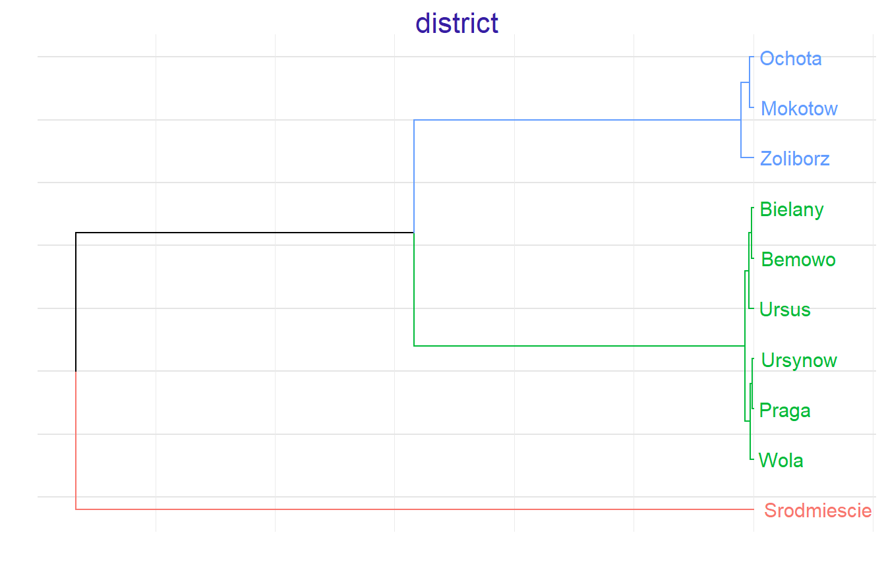
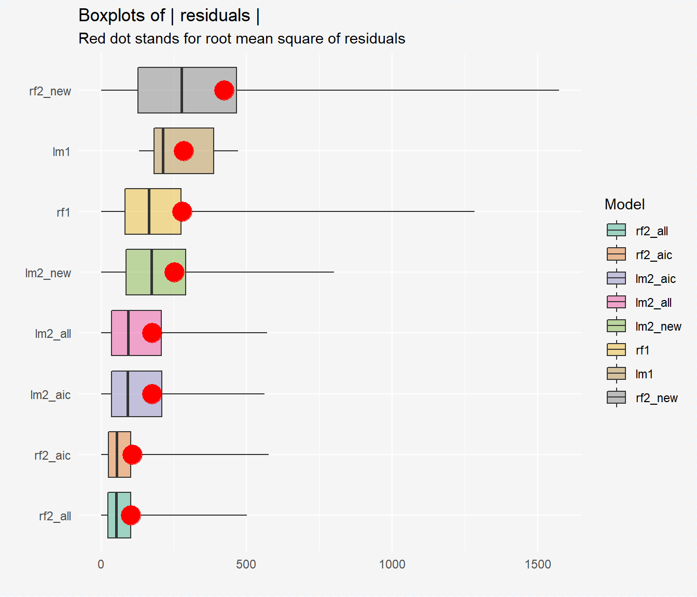
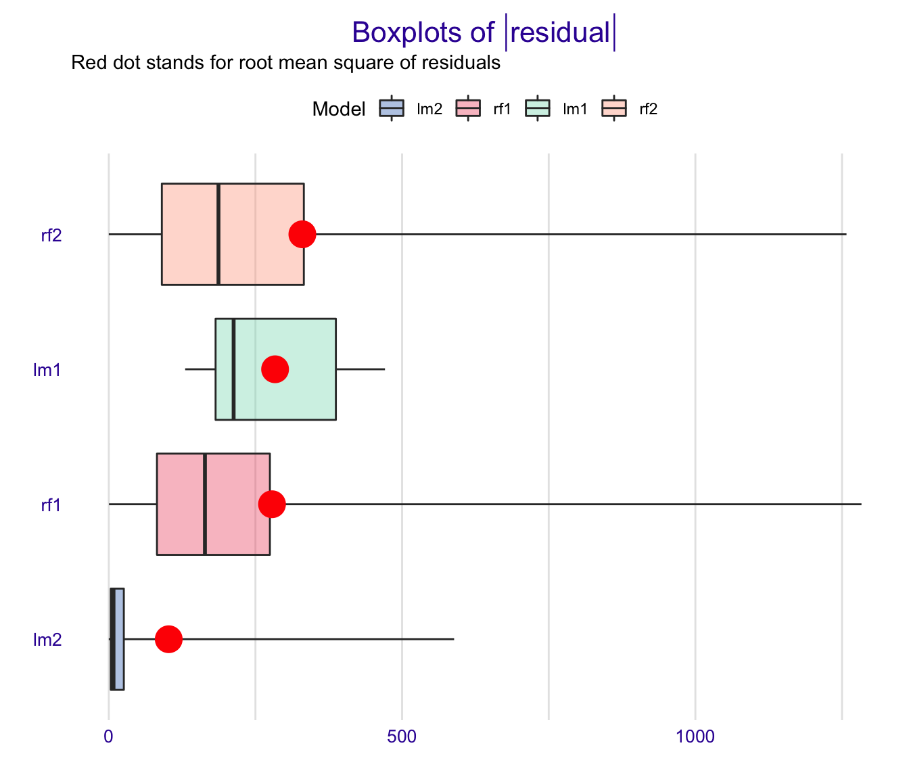

Regression example - apartments data
Anna Gierlak
2019-09-08
Source:vignettes/example_apartments.Rmd
example_apartments.RmdIn this vignette we present an example of an application of the rSAFE package in case of regression problems. It is based on apartments and apartmentsTest datasets which come from the DALEX package but are also available in the rSAFE package. We will use these artificial datasets to predict the price per square meter of an apartment based on features such as construction year, surface, floor, number of rooms and district. It should be mentioned that four of these variables are continuous while the fifth one is categorical.
library(rSAFE)
head(apartments)
#> m2.price construction.year surface floor no.rooms district
#> 1 5897 1953 25 3 1 Srodmiescie
#> 2 1818 1992 143 9 5 Bielany
#> 3 3643 1937 56 1 2 Praga
#> 4 3517 1995 93 7 3 Ochota
#> 5 3013 1992 144 6 5 Mokotow
#> 6 5795 1926 61 6 2 SrodmiescieBuilding a black-box model
First we fit a random forest model to the original apartments dataset - this is our complex model that will serve us as a surrogate.
Creating an explainer
We also create an explainer object that will be used later to create new variables and at the end to compare models performance.
library(DALEX)
explainer_rf1 <- explain(model_rf1, data = apartmentsTest[1:3000,2:6], y = apartmentsTest[1:3000,1], label = "rf1", verbose = FALSE)
explainer_rf1
#> Model label: rf1
#> Model class: randomForest.formula,randomForest
#> Data head :
#> construction.year surface floor no.rooms district
#> 1001 1976 131 3 5 Srodmiescie
#> 1002 1978 112 9 4 MokotowCreating a safe_extractor
Now, we create a safe_extractor object using rSAFE package and our surrogate model. Setting the argument verbose=FALSE stops progress bar from printing.
safe_extractor <- safe_extraction(explainer_rf1, penalty = 25, verbose = FALSE)Now, let’s print summary for the new object we have just created.
print(safe_extractor)
#> Variable 'construction.year' - selected intervals:
#> (-Inf, 1937]
#> (1937, 1994]
#> (1994, Inf)
#> Variable 'surface' - selected intervals:
#> (-Inf, 47]
#> (47, 101]
#> (101, Inf)
#> Variable 'floor' - selected intervals:
#> (-Inf, 5]
#> (5, Inf)
#> Variable 'no.rooms' - selected intervals:
#> (-Inf, 3]
#> (3, Inf)
#> Variable 'district' - created levels:
#> Bemowo, Bielany, Ursus, Ursynow, Praga, Wola -> Bemowo_Bielany_Praga_Ursus_Ursynow_Wola
#> Zoliborz, Mokotow, Ochota -> Mokotow_Ochota_Zoliborz
#> Srodmiescie -> SrodmiescieWe can see transormation propositions for all variables in our dataset.
In the plot below we can see which points have been chosen to be the breakpoints for a particular variable:
plot(safe_extractor, variable = "construction.year")
For factor variables we can observe in which order levels have been merged and what is the optimal clustering:
plot(safe_extractor, variable = "district")
Transforming data
Now we can use our safe_extractor object to create new categorical features in the given dataset.
data1 <- safely_transform_data(safe_extractor, apartmentsTest[3001:6000,], verbose = FALSE)| district | m2.price | construction.year | surface | floor | no.rooms | construction.year_new | surface_new | floor_new | no.rooms_new | district_new |
|---|---|---|---|---|---|---|---|---|---|---|
| Bielany | 3542 | 1979 | 21 | 6 | 1 | (1937, 1994] | (-Inf, 47] | (5, Inf) | (-Inf, 3] | Bemowo_Bielany_Praga_Ursus_Ursynow_Wola |
| Srodmiescie | 5631 | 1997 | 107 | 2 | 4 | (1994, Inf) | (101, Inf) | (-Inf, 5] | (3, Inf) | Srodmiescie |
| Bielany | 2989 | 1994 | 41 | 9 | 2 | (1937, 1994] | (-Inf, 47] | (5, Inf) | (-Inf, 3] | Bemowo_Bielany_Praga_Ursus_Ursynow_Wola |
| Ursynow | 3822 | 1968 | 28 | 2 | 2 | (1937, 1994] | (-Inf, 47] | (-Inf, 5] | (-Inf, 3] | Bemowo_Bielany_Praga_Ursus_Ursynow_Wola |
| Ursynow | 2337 | 1971 | 146 | 3 | 6 | (1937, 1994] | (101, Inf) | (-Inf, 5] | (3, Inf) | Bemowo_Bielany_Praga_Ursus_Ursynow_Wola |
| Ochota | 3381 | 1956 | 97 | 8 | 3 | (1937, 1994] | (47, 101] | (5, Inf) | (-Inf, 3] | Mokotow_Ochota_Zoliborz |
We can also perform feature selection if we wish. For each original feature it keeps exactly one of their forms - original one or transformed one.
vars <- safely_select_variables(safe_extractor, data1, which_y = "m2.price", verbose = FALSE)
data1 <- data1[,c("m2.price", vars)]
print(vars)
#> [1] "surface" "floor" "no.rooms"
#> [4] "construction.year_new" "district_new"It can be observed that for some features the original form was preffered and for others the transformed one.
Here are the first few rows for our data after feature selection:
| m2.price | surface | floor | no.rooms | construction.year_new | district_new |
|---|---|---|---|---|---|
| 3542 | 21 | 6 | 1 | (1937, 1994] | Bemowo_Bielany_Praga_Ursus_Ursynow_Wola |
| 5631 | 107 | 2 | 4 | (1994, Inf) | Srodmiescie |
| 2989 | 41 | 9 | 2 | (1937, 1994] | Bemowo_Bielany_Praga_Ursus_Ursynow_Wola |
| 3822 | 28 | 2 | 2 | (1937, 1994] | Bemowo_Bielany_Praga_Ursus_Ursynow_Wola |
| 2337 | 146 | 3 | 6 | (1937, 1994] | Bemowo_Bielany_Praga_Ursus_Ursynow_Wola |
| 3381 | 97 | 8 | 3 | (1937, 1994] | Mokotow_Ochota_Zoliborz |
Now, we perform transformations on another data that will be used later in explainers.
data2 <- safely_transform_data(safe_extractor, apartmentsTest[6001:9000,], verbose = FALSE)[,c("m2.price", vars)]Creating white-box models on original and transformed datasets
Let’s fit the models to data containg newly created columns. We consider a linear model as a white-box model.
model_lm2 <- lm(m2.price ~ ., data = data1)
explainer_lm2 <- explain(model_lm2, data = data2, y = apartmentsTest[6001:9000,1], label = "lm2", verbose = FALSE)
set.seed(111)
model_rf2 <- randomForest(m2.price ~ ., data = data1)
explainer_rf2 <- explain(model_rf2, data2, apartmentsTest[6001:9000,1], label = "rf2", verbose = FALSE)Moreover, we create a linear model based on original apartments dataset and its corresponding explainer in order to check if our methodology improves results.
model_lm1 <- lm(m2.price ~ ., data = apartments)
explainer_lm1 <- explain(model_lm1, data = apartmentsTest[1:3000,2:6], y = apartmentsTest[1:3000,1], label = "lm1", verbose = FALSE)Comparing models performance
Final step is the comparison of all the models we have created.
mp_lm1 <- model_performance(explainer_lm1)
mp_rf1 <- model_performance(explainer_rf1)
mp_lm2 <- model_performance(explainer_lm2)
mp_rf2 <- model_performance(explainer_rf2)plot(mp_lm1, mp_rf1, mp_lm2, mp_rf2, geom = "boxplot")
In the plot above we can see that the linear model based on transformed features has generally more accurate predictions that the one fitted to the original dataset.